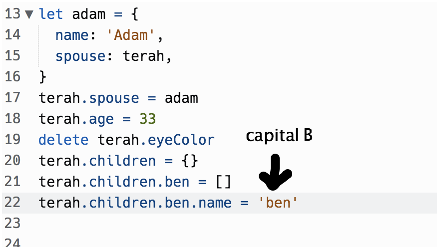

What was the problem?
I got stuck on Manipulating JS Objects. This is a challenge that requires you to manipulate things in the object.
I had a go at it but i wasnt getting it to turn True. Whenever i get stuck on something i always try to do it myself before asking for help.
so i went back to sprint 3 intro to Js and watched the Objects video again and that helped me on how to approach this challenge.
I realised that it was pretty simple i just needed to spell it correctly because its case sensitive.

As i got towards the end of the challenge, my anxiety levels started to come down. What i took away from this challenge is to relax and take my time to check the spelling of the syntax.
Reflect on how confident you feel using each of these problem-solving techniques/processes:
Pseudocode: I use this method when im laying out my webpage. It makes it easier for people who are reaing my code understand whats going on.
Trying something I usually try to figure it out on my own. If i dont know what to do i look in the discord then if i cant find anything on there
i will ask my cohort and then i will ask my facilitator.
Rubber Ducky I tried doing this but it feels weird although i can see how it benifits people
Reading error messages sometimes i understand what needs to be done. Still work in progress.
Console.logging I been using it abit more this sprint and i understand that its really useful.
Googling i use google almost all the time. sometimes im on google for ages and still cant find what im looking for.
Asking your peers for help yeah i asked my peers if i get stuck pretty often.
Asking coaches for help i haven't been doing this as much as i like. i have been using the discord or my cohort for help.
Improving your process with reflection yeah i like reflecting in general. its a reminder that im heading in the right direction in life.